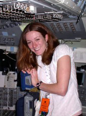
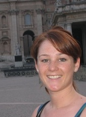
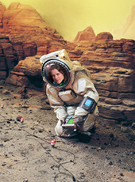
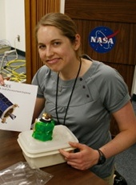
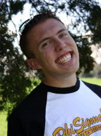

LGC 2011: Conference Organizers
The Organizing Committee is comprised of grad students and postdocs from a variety of institutions and areas of research.
Email the conference organizers.
| Adrienne Dove | |
| Alicia Muirhead | |
| Georgiana Kramer | |
| Heidi Fuqua | |
| Andrew Poppe |
-
Adrienne Dove, Univ. of Colorado at Boulder
Back to topAdrienne Dove is a fifth-year graduate student in Astrophysical and Planetary Sciences at the University of Colorado (also affiliated with LASP and CCLDAS), working with Prof. Mihály Horányi. She has been involved in research in collaboration with Ball Aerospace to evaluate the effects of surface treatments on dust adhesion by using a centrifuge technique to measure adhesion forces in vacuum. She is currently investigating the generation of photoelectron sheaths in vacuum and the impact of UV illumination of the motion of lunar dust.
-
Alicia Muirhead, Univ. of Colorado at Boulder
Back to topAlicia is a first-year graduate student at the University of Colorado at Boulder in the Department of Physics, working with Prof. Shijie Zhong. She has quantified the correlation of deep moonquakes with mare basalts and is currently using numerical methods to study solid tides on the Moon to better understand the presence of heterogeneities deep in the lunar mantle.
-
Georgiana Kramer, Lunar and Planetary Institute
Back to topGeorgiana Kramer is a postdoctoral researcher at the LPI-JSC Center for Lunar Science and Exploration. She studies the chemistry and mineralogy of the Moon, asteroids, and other planetary surfaces through integrated sample and remote sensing data analysis. Her research focuses on the chemical, physical and spectral effects of space weathering on planetary surfaces with little to no atmosphere or magnetic field. This research includes modeling the formation and retention of space dew. Dr. Kramer is on the Moon Mineralogy Mapper Science Team.
-
Heidi Fuqua, International Space University
Back to topHeidi is a recent graduate from the Masters of Space Studies program at the International Space University in Strasbourg, France. She will begin a Ph.D. program this fall to pursue her research interests in Lunar Science. She has previously worked as an engineer for Northrop Grumman Aerospace Systems, the Boeing Company, and NASA Ames Research Center working on the next lunar mission called LADEE.
-
Andrew Poppe, Univ. of Colorado at Boulder
Back to topAndrew is a fifth-year graduate student at the Laboratory for Atmospheric and Space Physics and the Department of Physics at the University of Colorado at Boulder, working with Prof. Mihály Horányi. His research focuses on dusty space plasma physics throughout the solar system. His current projects include the Student Dust Counter on the New Horizons mission and simulations of the lunar photoelectron sheath as part of the Colorado Center for Lunar Dust and Atmospheric Studies.